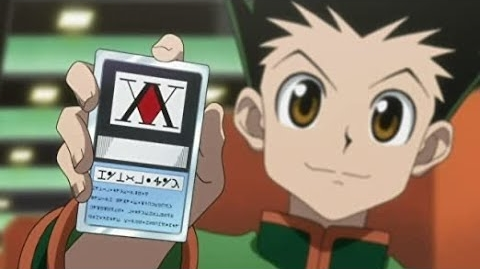

HUNTERXHUNTER

Hunters devote themselves to accomplishing hazardous tasks, all from traversing the world's uncharted territories to locating rare items and monsters.
Before becoming a Hunter, one must pass the Hunter Examination—a high-risk selection process in which most applicants end up handicapped or worse, deceased.
Ambitious participants who challenge the notorious exam carry their own reason. What drives 12-year-old Gon Freecss is finding Ging, his father and a Hunter himself.
Believing that he will meet his father by becoming a Hunter, Gon takes the first step to walk the same path.
During the Hunter Examination, Gon befriends the medical student Leorio Paladiknight, the vindictive Kurapika, and ex-assassin Killua Zoldyck.
While their motives vastly differ from each other, they band together for a common goal and begin to venture into a perilous world.
|
Hunter × Hunter (pronounced "hunter hunter") is a Japanese manga series written and illustrated by Yoshihiro Togashi. It has been serialized in Shueisha's shōnen manga magazine Weekly Shōnen Jump since March 1998, although the manga has frequently gone on extended hiatuses since 2006. Its chapters have been collected in 36 tankōbon volumes as of October 2018. The story focuses on a young boy named Gon Freecss who discovers that his father, who left him at a young age, is actually a world-renowned Hunter, a licensed professional who specializes in fantastical pursuits such as locating rare or unidentified animal species, treasure hunting, surveying unexplored enclaves, or hunting down lawless individuals. Gon departs on a journey to become a Hunter and eventually find his father. Along the way, Gon meets various other Hunters and encounters the paranormal.
|

|
2011 Anime And Manga
Hunter Exam Arc
Zoldyck Arc
Heavens Arena Arc
Yorknew City Arc
Greed Island Arc
Chimera Ant Arc
Election Arc
Manga
8a. Succession War Arc
8b. Dark Continent Expedition Arc
|

HUNTER EXAM ARC
The journey begins with Gon taking a series of bizarre tests to become a Hunter, which includes navigating a deadly jungle, hunting other applicants, killing a wild boar, an extraordinarily long underground marathon, and making sushi.
 During the Hunter Exam, Gon meets and befriends three of the applicants, Kurapika, Killua, and Leorio. The series' first antagonist is also introduced as one of the applicants.
During the Hunter Exam, Gon meets and befriends three of the applicants, Kurapika, Killua, and Leorio. The series' first antagonist is also introduced as one of the applicants.
Hisoka is a complex villain who uses playing cards as weapons and views Gon as an "unripe fruit" that he will take great pleasure in killing once he's grown up enough to present a challenge.
Before the end of the Hunter Exam, Killua faces his brother, Illumi, who makes him come home before he can even finish the exam.
Overall, the Hunter Exam is an exceptionally strong arc that introduces plenty of different characters all after the same thing but for different reasons. It plays around with its storytelling and doesn't waste any opportunity to tell you more about its characters. In shone, the first arc tends to be a throwaway, making this one stand a cut about the rest.
ZOLDYCK ARC
Inside the Zoldyck estate, Kikyo and Kalluto meet with Gon's group.[8] She informs them she overheard everything about Gon from Illumi. She also claims to have told Killua that his friends are in the domain about three weeks ago. She had come in order to deliver a message from Killua—he cannot see Gon and the others.
Killua is seen inside an isolation chamber, his arms chained up. His older brother Milluki holds a whip and tortures him but to his annoyance, Killua simply sleeps him off.
Killua then breaks his arm free from one of the confinements and threatens Milluki that if he ever touches those three, he'll kill him.Their grandfather Zeno Zoldyck enters the room and tells Killua that he may leave. He also tells him that his father wants to see him in his room.
Killua's father, Silva Zoldyck asks him about his "friends".He gives Killua permission to leave, but he has to promise that he will never betray his friends. Killua excitedly runs but is stopped short by his mother who claims that Gon had already left. Not convinced, Killua glares at her and tells her to get away from him. And then Killua tells them that they need to leave quickly to escape from his mother.
HEAVENS ARENA ARC

After that, Killua went with Gon to the Heavens Arena for the second time.He met there Wing who volunteered to teach Killua and Gon a technique called Nen. Killua was eager to master it as it was the secret technique Illumi used to surpass him.
Gon and Killua enter into the Heavens Arena to learn NEN system.,which is the power source in the show. They take part in the challenges to earn money and to learn NEN at the same time.In Wing's room, Gon, Killua and Zushi are being taught by Wing. He explains the 4 main principles: Ten, Ren, Zetsu and Hatsu. He demonstrates how Ren works, by giving Killua the idea of killing him. Because of the strong pressure, Killua is forced to back off. Wing advises them to train with Zushi and start mastering Ten but Killua suggests that they should leave. Killua reveals to Gon that Wing was lying all along as his teachings don't explain Zushi's extreme resilience he noticed while fighting him. Zushi is troubled because Wing lied to them. Wing only says that for them to know the other meaning of Nen is dangerous.
 After clearing the 190th floor, Gon and Killua advance to the 200th floor. They are stopped by a strong aura which makes them both wary. An employee appears, stating that they should register before midnight. Hisoka appears out of nowhere, and warns them that they are not ready yet and he won't let them pass. Wing appears behind them and offers to teach them the real Nen. Before leaving, the employee also informs Killua that if he can't register at the given time, he will never be admitted as he already failed to register for the 200th floor once as a kid. In Wing's room, he finally teaches Gon and Killua the real Nen.
After clearing the 190th floor, Gon and Killua advance to the 200th floor. They are stopped by a strong aura which makes them both wary. An employee appears, stating that they should register before midnight. Hisoka appears out of nowhere, and warns them that they are not ready yet and he won't let them pass. Wing appears behind them and offers to teach them the real Nen. Before leaving, the employee also informs Killua that if he can't register at the given time, he will never be admitted as he already failed to register for the 200th floor once as a kid. In Wing's room, he finally teaches Gon and Killua the real Nen.
YORKNEW CITY ARC
|
A big part of the Yorknew City focuses on Kurapika's clash with the Phantom Troupe. Right from the very beginning, it was established that Kurapika wanted to avenge the death of his clan by hunting down the Phantom Troupe.
In this arc, he finally got the chance to do that and Uvogin of the Phantom Troupe became the first person to fall to his vengeance. He also targeted Chrollo later on and managed to seal away his Nen.
Chrollo Lucilfer is one of the strongest characters in Hunter x Hunter and he's the leader of the Phantom Troupe. Just like all the other members of the Phantom Troupe, Chrollo made his presence known in this arc and his overpowered Nen abilities were also revealed to the fans.He led a Requiem for Uvogin and even clashed with the likes of Zeno and Silva, managing to hold his own against both of them. Without a doubt, this arc gave the fans an incredible character in Chrollo and that's one of the many reasons why it is so special.
The Yorknew City arc was filled with some of the biggest character deaths, and that adds a level of realism to this arc like no other. Fans got to see the likes of Phantom Troupe lead a massacre at the auction, along with the death of Uvogin.Chrollo himself barely survived.
|